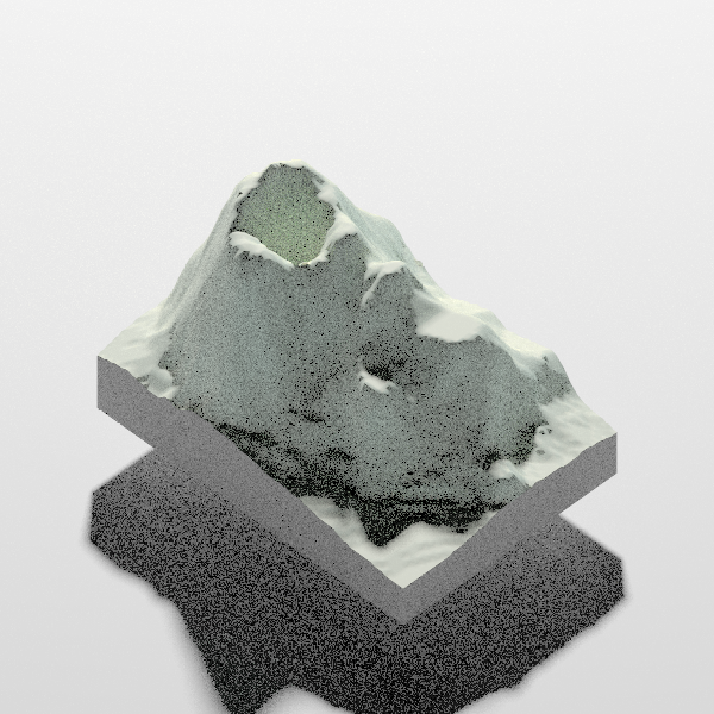
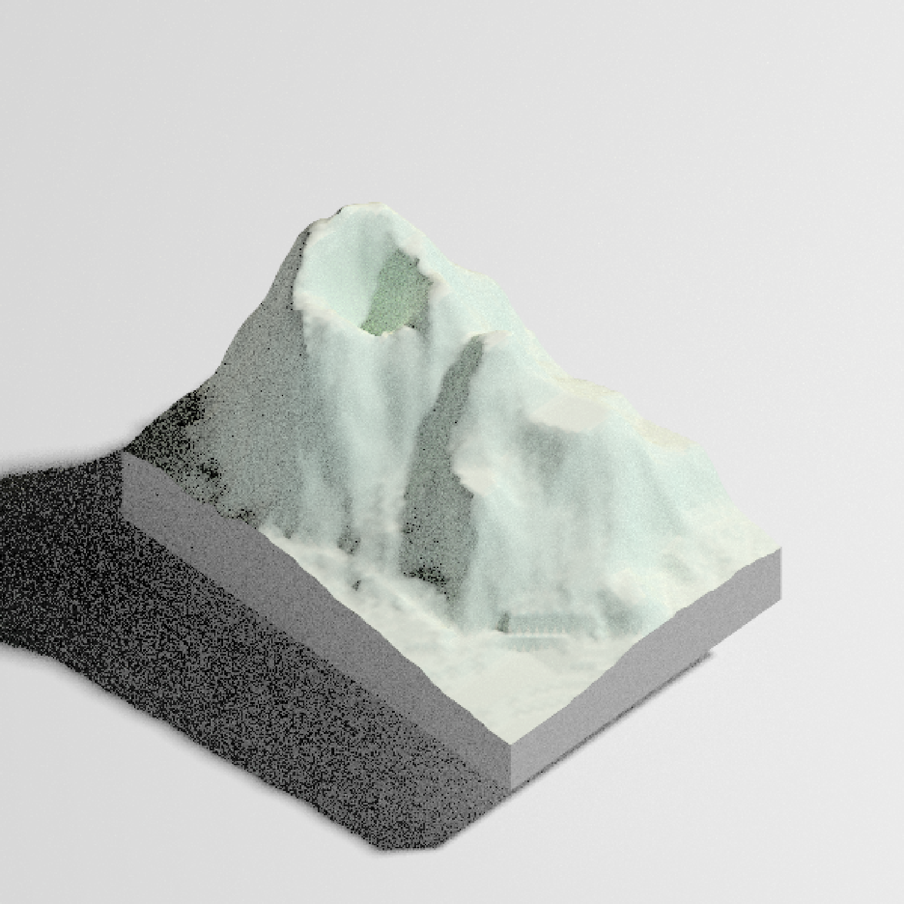
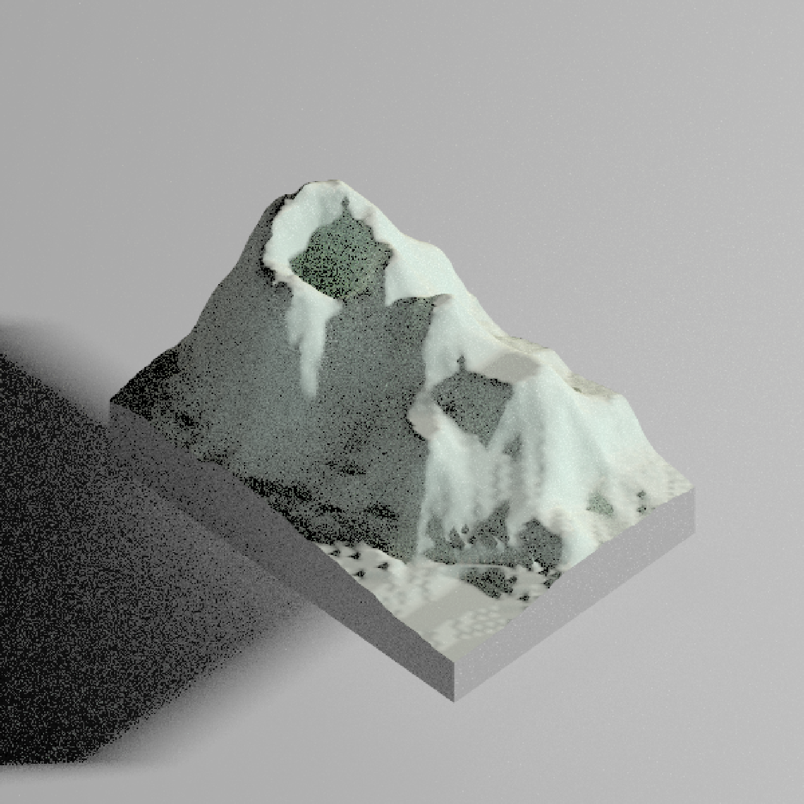
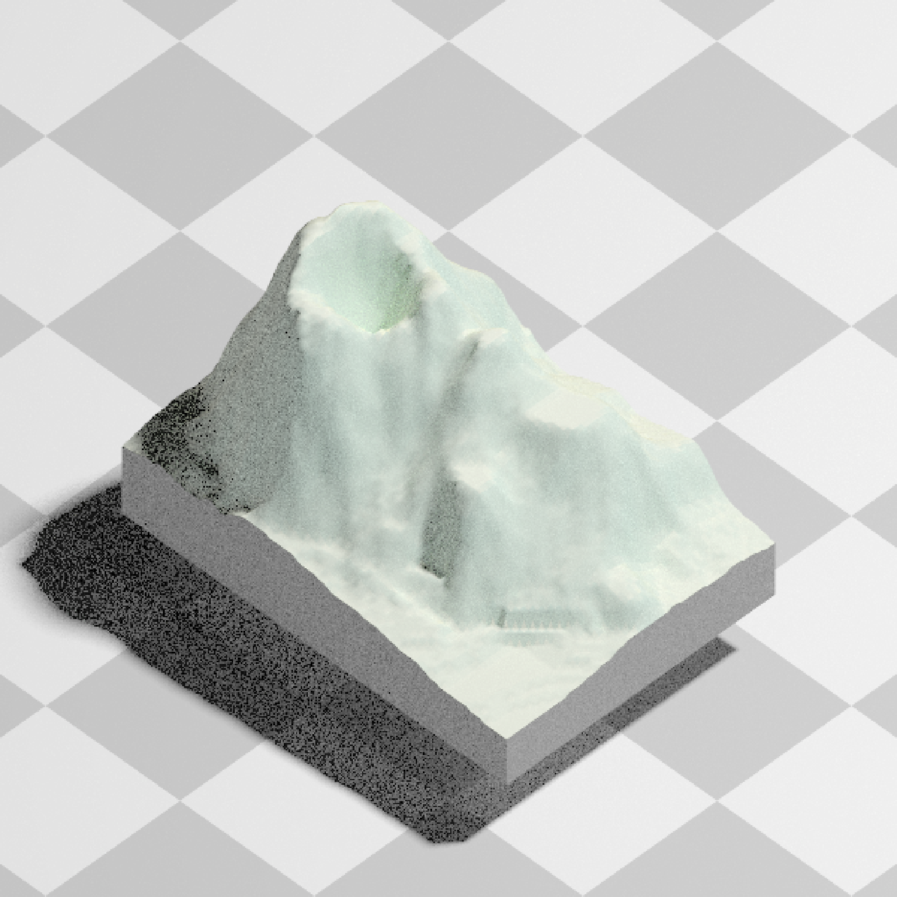
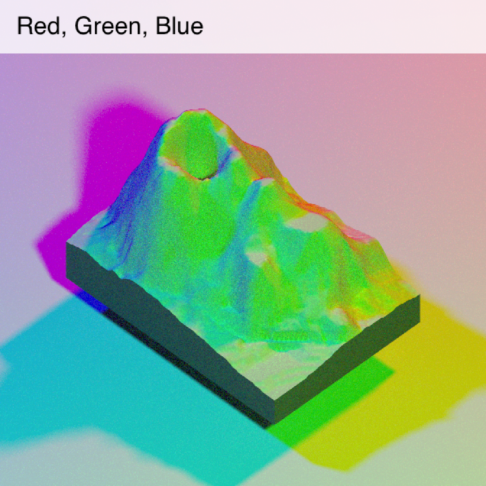
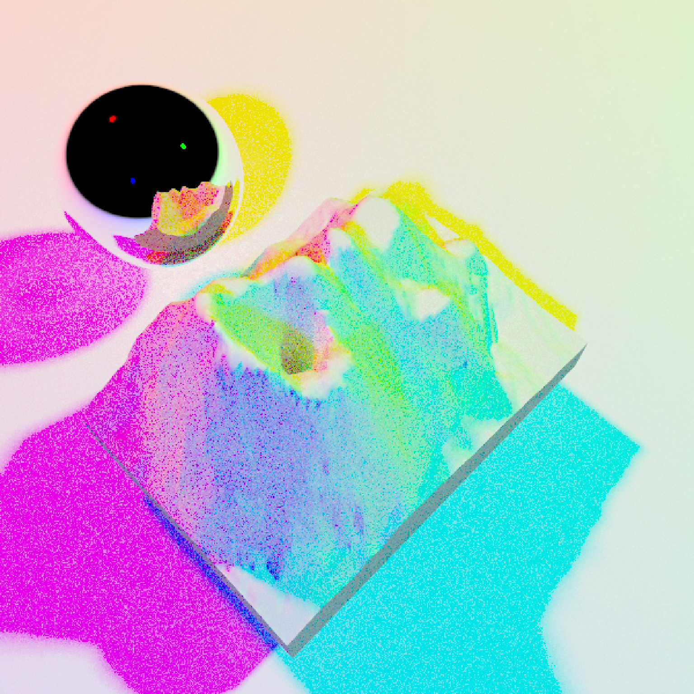
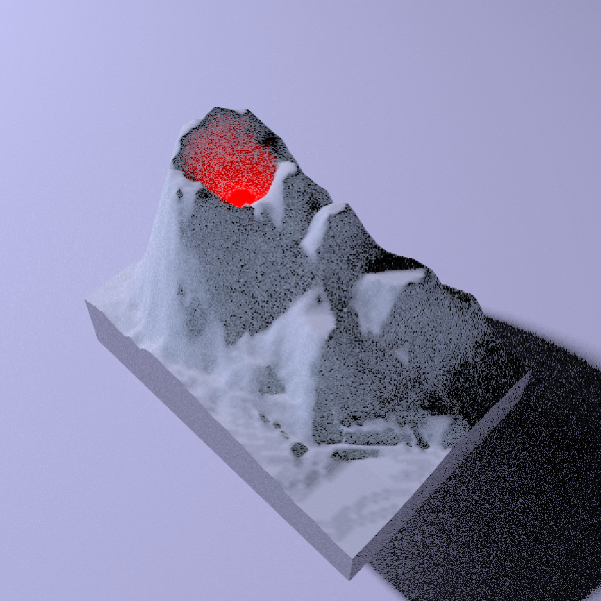
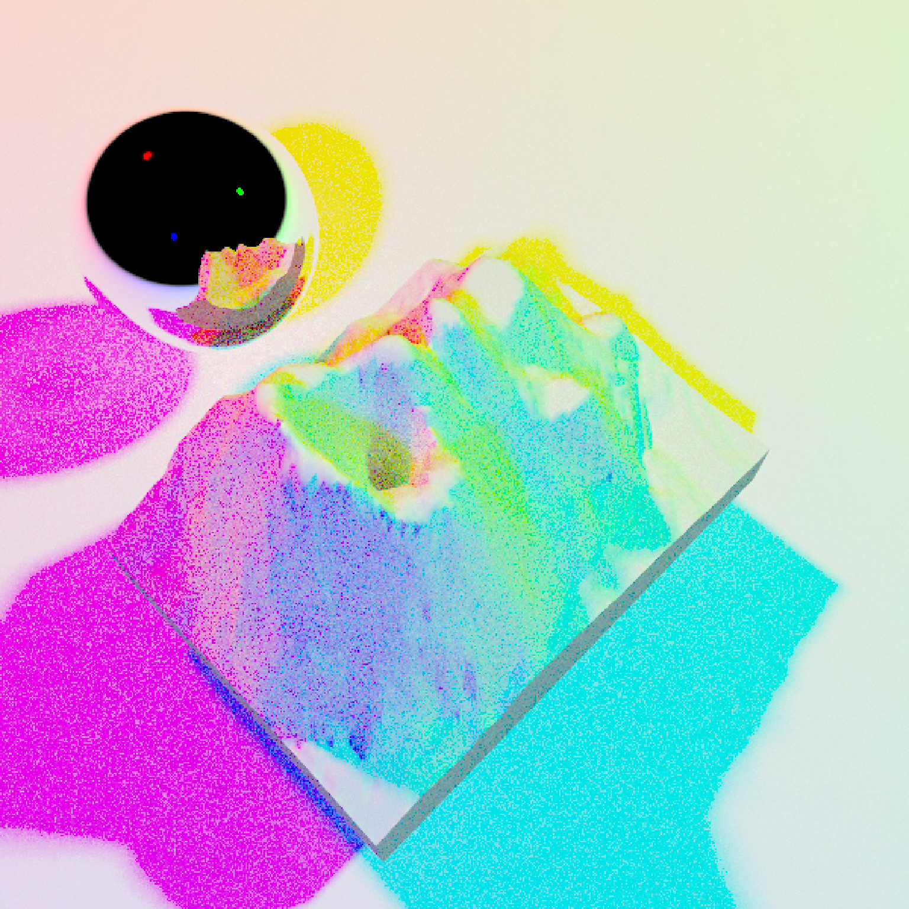
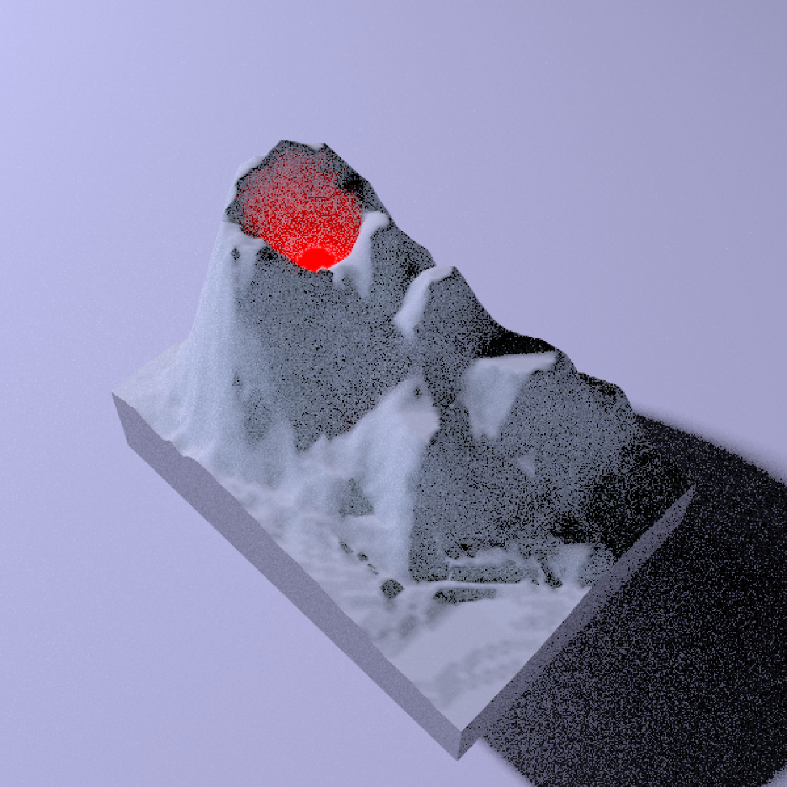

Renders a raytraced version of the displayed rgl scene, using the `rayrender` package. User can specify the light direction, intensity, and color, as well as specify the material of the ground and add additional scene elements.
This function can also generate frames for an animation by passing camera animation information from either `convert_path_to_animation_coords()` or `rayrender::generate_camera_motion()` functions.
render_highquality(
filename = NULL,
samples = 128,
sample_method = "sobol_blue",
min_variance = 1e-07,
light = TRUE,
lightdirection = 315,
lightaltitude = 45,
lightsize = NULL,
lightintensity = 500,
lightcolor = "white",
obj_material = rayrender::diffuse(),
override_material = FALSE,
cache_scene = FALSE,
reset_scene_cache = FALSE,
width = NULL,
height = NULL,
text_angle = NULL,
text_size = 6,
text_offset = c(0, 0, 0),
line_radius = 0.5,
point_radius = 0.5,
smooth_line = FALSE,
use_extruded_paths = FALSE,
scale_text_angle = NULL,
scale_text_size = 6,
scale_text_offset = c(0, 0, 0),
title_text = NULL,
title_offset = c(20, 20),
title_color = "black",
title_size = 30,
title_font = "sans",
title_bar_color = NULL,
title_bar_alpha = 0.5,
ground_material = rayrender::diffuse(),
ground_size = 1e+05,
scene_elements = NULL,
camera_location = NULL,
camera_lookat = NULL,
camera_interpolate = 1,
clear = FALSE,
return_scene = FALSE,
print_scene_info = FALSE,
clamp_value = 10,
calculate_consistent_normals = FALSE,
load_normals = TRUE,
point_material = rayrender::diffuse,
point_material_args = list(),
path_material = rayrender::diffuse,
path_material_args = list(),
animation_camera_coords = NULL,
...
)Arguments
- filename
Default `NA`. Filename of saved image. If missing, will display to current device.
- samples
Default `128`. The maximum number of samples for each pixel. Increase this to increase the quality of the rendering.
- sample_method
Default `"sobol_blue"`, unless `samples > 256`, in which it defaults to `"sobol"`. The type of sampling method used to generate random numbers. The other options are `random` (worst quality but fastest), `sobol_blue` (best option for sample counts below 256), and `sobol` (slowest but best quality, better than `sobol_blue` for sample counts greater than 256).
- min_variance
Default `1e-6`. Minimum acceptable variance for a block of pixels for the adaptive sampler. Smaller numbers give higher quality images, at the expense of longer rendering times. If this is set to zero, the adaptive sampler will be turned off and the renderer will use the maximum number of samples everywhere.
- light
Default `TRUE`. Whether there should be a light in the scene. If not, the scene will be lit with a bluish sky.
- lightdirection
Default `315`. Position of the light angle around the scene. If this is a vector longer than one, multiple lights will be generated (using values from `lightaltitude`, `lightintensity`, and `lightcolor`)
- lightaltitude
Default `45`. Angle above the horizon that the light is located. If this is a vector longer than one, multiple lights will be generated (using values from `lightdirection`, `lightintensity`, and `lightcolor`)
- lightsize
Default `NULL`. Radius of the light(s). Automatically chosen, but can be set here by the user.
- lightintensity
Default `500`. Intensity of the light.
- lightcolor
Default `white`. The color of the light.
- obj_material
Default `rayrender::diffuse()`. The material properties of the object file.
- cache_scene
Default `FALSE`. Whether to cache the current scene to memory so it does not have to be converted to a `raymesh` object each time `render_snapshot()` is called. If `TRUE` and a scene has been cached, it will be used when rendering.
- reset_scene_cache
Default `FALSE`. Resets the scene cache before rendering.
- width
Defaults to the width of the rgl window. Width of the rendering.
- height
Defaults to the height of the rgl window. Height of the rendering.
- text_angle
Default `NULL`, which forces the text always to face the camera. If a single angle (degrees), will specify the absolute angle all the labels are facing. If three angles, this will specify all three orientations (relative to the x,y, and z axes) of the text labels.
- text_size
Default `6`. Height of the text.
- text_offset
Default `c(0,0,0)`. Offset to be applied to all text labels.
- line_radius
Default `0.5`. Radius of line/path segments.
- point_radius
Default `0.5`. Radius of 3D points (rendered with `render_points()`.
- smooth_line
Default `FALSE`. If `TRUE`, the line will be rendered with a continuous smooth line, rather than straight segments.
- use_extruded_paths
Default `TRUE`. If `FALSE`, paths will be generated with the `rayrender::path()` object, instead of `rayrender::extruded_path()`.
- scale_text_angle
Default `NULL`. Same as `text_angle`, but for the scale bar.
- scale_text_size
Default `6`. Height of the scale bar text.
- scale_text_offset
Default `c(0,0,0)`. Offset to be applied to all scale bar text labels.
- title_text
Default `NULL`. Text. Adds a title to the image, using magick::image_annotate.
- title_offset
Default `c(20,20)`. Distance from the top-left (default, `gravity` direction in image_annotate) corner to offset the title.
- title_color
Default `black`. Font color.
- title_size
Default `30`. Font size in pixels.
- title_font
Default `sans`. String with font family such as "sans", "mono", "serif", "Times", "Helvetica", "Trebuchet", "Georgia", "Palatino" or "Comic Sans".
- title_bar_color
Default `NULL`. If a color, this will create a colored bar under the title.
- title_bar_alpha
Default `0.5`. Transparency of the title bar.
- ground_material
Default `diffuse()`. Material defined by the rayrender material functions.
- ground_size
Default `100000`. The width of the plane representing the ground.
- scene_elements
Default `NULL`. Extra scene elements to add to the scene, created with rayrender.
- camera_location
Default `NULL`. Custom position of the camera. The `FOV`, `width`, and `height` arguments will still be derived from the rgl window.
- camera_lookat
Default `NULL`. Custom point at which the camera is directed. The `FOV`, `width`, and `height` arguments will still be derived from the rgl window.
- camera_interpolate
Default `c(0,0)`. Maximum `1`, minimum `0`. Sets the camera at a point between the `rgl` view and the `camera_location` and `camera_lookat` vectors.
- clear
Default `FALSE`. If `TRUE`, the current `rgl` device will be cleared.
- return_scene
Default `FALSE`. If `TRUE`, this will return the rayrender scene (instead of rendering the image).
- print_scene_info
Default `FALSE`. If `TRUE`, it will print the position and lookat point of the camera.
- clamp_value
Default `10`. See documentation for `rayrender::render_scene()`.
- calculate_consistent_normals
Default `FALSE`. Whether to calculate consistent vertex normals to prevent energy loss at edges.
- load_normals
Default `TRUE`. Whether to load the vertex normals if they exist in the OBJ file.
- point_material
Default `rayrender::diffuse`. The rayrender material function to be applied to point data.
- point_material_args
Default empty `list()`. The function arguments to `point_material`. The argument `color` will be automatically extracted from the rgl scene, but all other arguments can be specified here.
- path_material
Default `rayrender::diffuse`. The rayrender material function to be applied to path data.
- path_material_args
Default empty `list()`. The function arguments to `path_material`. The argument `color` will be automatically extracted from the rgl scene, but all other arguments can be specified here.
- animation_camera_coords
Default `NULL`. Expects camera animation output from either `convert_path_to_animation_coords()` or `rayrender::generate_camera_motion()` functions.
- ...
Additional parameters to pass to `rayrender::render_scene`()
Examples
#Render the volcano dataset using pathtracing
if(run_documentation()) {
volcano %>%
sphere_shade() %>%
plot_3d(volcano,zscale = 2)
render_highquality(min_variance = 0, sample_method = "sobol_blue")
}

#Change position of light
if(run_documentation()) {
render_highquality(lightdirection = 45, min_variance = 0, sample_method = "sobol_blue")
}

#Change vertical position of light
if(run_documentation()) {
render_highquality(lightdirection = 45, lightaltitude = 10,
min_variance = 0, sample_method = "sobol_blue")
}

#Change the ground material
if(run_documentation()) {
render_highquality(lightdirection = 45, lightaltitude=60,
ground_material = rayrender::diffuse(checkerperiod = 30, checkercolor="grey50"),
min_variance = 0, sample_method = "sobol_blue")
}

#Add three different color lights and a title
if(run_documentation()) {
render_highquality(lightdirection = c(0,120,240), lightaltitude=45,
lightcolor=c("red","green","blue"), title_text = "Red, Green, Blue",
title_bar_color="white", title_bar_alpha=0.8,
min_variance = 0, sample_method = "sobol_blue")
}
#> Error in if (is.na(filename)) { rayimage::add_title(temp, title_text = title_text, title_color = title_color, title_font = title_font, title_offset = title_offset, title_bar_alpha = title_bar_alpha, title_bar_color = title_bar_color, title_size = title_size, preview = TRUE)} else { rayimage::add_title(temp, title_text = title_text, title_color = title_color, title_font = title_font, title_offset = title_offset, title_bar_alpha = title_bar_alpha, title_bar_color = title_bar_color, title_size = title_size, filename = filename)}: argument is of length zero
#Change the camera:
if(run_documentation()) {
render_camera(theta=-45,phi=60,fov=60,zoom=0.8)
render_highquality(lightdirection = c(0),
title_bar_color="white", title_bar_alpha=0.8,
min_variance = 0, sample_method = "sobol_blue")
}

#Add a shiny metal sphere
if(run_documentation()) {
render_camera(theta=-45,phi=60,fov=60,zoom=0.8)
render_highquality(lightdirection = c(0,120,240), lightaltitude=45,
lightcolor=c("red","green","blue"),
scene_elements = rayrender::sphere(z=-60,y=0,
radius=20,material=rayrender::metal()),
min_variance = 0, sample_method = "sobol_blue")
}
 #Add a red light to the volcano and change the ambient light to dusk
if(run_documentation()) {
render_camera(theta=45,phi=45)
render_highquality(lightdirection = c(240), lightaltitude=30,
lightcolor=c("#5555ff"),
scene_elements = rayrender::sphere(z=0,y=15, x=-18, radius=5,
material=rayrender::light(color="red",intensity=10)),
min_variance = 0, sample_method = "sobol_blue")
}

#Manually change the camera location and direction
if(run_documentation()) {
render_camera(theta=45,phi=45,fov=90)
render_highquality(lightdirection = c(240), lightaltitude=30, lightcolor=c("#5555ff"),
camera_location = c(50,10,10), camera_lookat = c(0,15,0),
scene_elements = rayrender::sphere(z=0,y=15, x=-18, radius=5,
material=rayrender::light(color="red",intensity=10)),
min_variance = 0, sample_method = "sobol_blue")
}

#Add a red light to the volcano and change the ambient light to dusk
if(run_documentation()) {
render_camera(theta=45,phi=45)
render_highquality(lightdirection = c(240), lightaltitude=30,
lightcolor=c("#5555ff"),
scene_elements = rayrender::sphere(z=0,y=15, x=-18, radius=5,
material=rayrender::light(color="red",intensity=10)),
min_variance = 0, sample_method = "sobol_blue")
}

#Manually change the camera location and direction
if(run_documentation()) {
render_camera(theta=45,phi=45,fov=90)
render_highquality(lightdirection = c(240), lightaltitude=30, lightcolor=c("#5555ff"),
camera_location = c(50,10,10), camera_lookat = c(0,15,0),
scene_elements = rayrender::sphere(z=0,y=15, x=-18, radius=5,
material=rayrender::light(color="red",intensity=10)),
min_variance = 0, sample_method = "sobol_blue")
}
